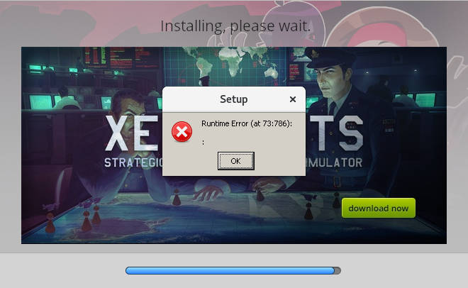
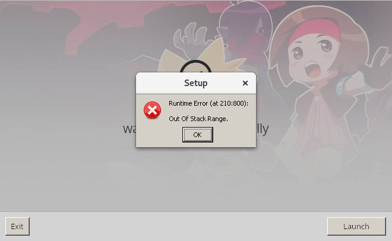
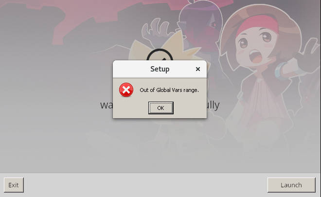
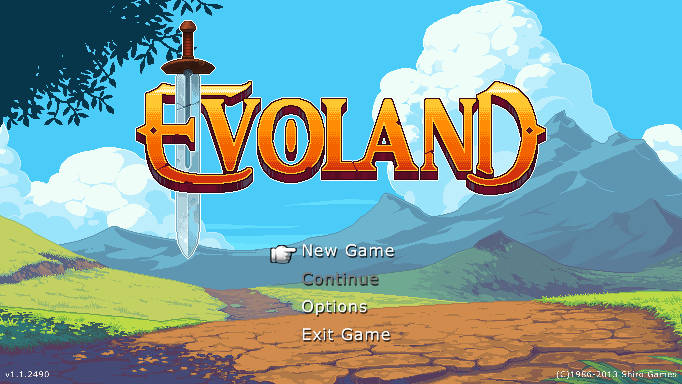

Objetivo
Luego de enterarme de la existencia de winepak, pensé en empaquetar una aplicación de windows para probar como funciona.
Para dar un contexto, winepak es un runtime para flatpak que como su nombre lo indica incluye a wine y puede utilizarse para ejecutar aplicaciones windows, instalandolas mediante flatpak.
PlayOnLinux
Una alternativa a crear un flatpak podría ser utilizar playonlinux.
La ventaja de flatpak es que se puede tener instalado a nivel de sistema los runtime con las diferentes versiones de wine, mientras que en playonlinux estas instalaciones se deben hacer por usuario.
Por otro lado, la ventaja de playonlinux es que tiene muchas más versiones de wine disponibles.
Evoland
Como ejemplo de aplicación a probar utilizaré el juego evoland, comprado en gog y que según la base de datos de aplicaciones de wine tiene un rating de platino para la versión de gog.com, lo que permite suponer que funcionará sin problemas emulandose mediante wine.
Vale la pena mencionar que la ventaja de haber realizado la compra en gog es que el juego está libre de DRM, lo que debería hacer la tarea de empaquetación de la aplicación más fácil.
Instalación de dependencias
flatpak
A continuación las dependencias necesarias para comenzar a trabajar:
-
flatpak-builder: necesario para realizar el empaquetado y que no tiene por que estar necesariamente instalado ya que usualmente se utiliza el paquete flatpak para ejecutar las aplicaciones. En debian basta con hacer:
$ sudo apt-get install -V flatpak-builderSi se está utilizando debian stretch (estable), con backports habilitados conviene instalarlo haciendo
$ sudo apt-get install -V -t stretch-backports flatpak-builderpara obtener la última versión disponible.
-
runtime winepak: según consta en la documentación de desarrollo de winepak, hay que instalar el runtime y el sdk de winepak, junto con sus dependencias:
Primero se agrega el sdk y runtime de freedesktop del cual depende winepak:
$ flatpak remote-add --user --if-not-exists flathub https://dl.flathub.org/repo/flathub.flatpakrepo $ flatpak install --user flathub org.freedesktop.Sdk $ flatpak install --user flathub org.freedesktop.PlatformLuego se agrega el sdk y el runtime de winepak:
$ flatpak remote-add --user --if-not-exists winepak https://dl.winepak.org/repo/winepak.flatpakrepo $ flatpak install --user winepak org.winepak.Sdk/x86_64/3.0 $ flatpak install --user winepak org.winepak.Platform/x86_64/3.0 $ flatpak install --user winepak org.winepak.Platform.Compat32/x86_64/3.0Nota: solo se instala la última version estable de wine (no las staging) de 64bits. Se agrega Compat32 para poder utilizar versiones de aplicaciones de 32bits con wine. Para determinar la última versión estable se utiliza:
$ flatpak remote-ls --show-details winepak | grep -i sdk runtime/org.winepak.Sdk/x86_64/3.0 9ffce8874289 2.5 GB 994.2 MB -
evoland: el programa evoland, que se descargará del sitio de gog como se indicó más arriba. A continuacion el sha256 del archivo descargado:
a478ca738c312a6b8a2f289f309efa7c893efe3b06ff1753a6bea88864b62ce7 setup_evoland_1.1.2490_(20677).exeSe comprueba que es una aplicación windows de 32bits utilizando el comando
file:$ file "setup_evoland_1.1.2490_(20677).exe" /home/jmpc/Downloads/setup_evoland_1.1.2490_(20677).exe: PE32 executable (GUI) Intel 80386, for MS Windowspor lo que va a tener sentido utilizar la extensión Compat32 de winepak
Creación de paquete genérico para pruebas de instalación
Ya que se está explorando el uso de winepak, no se pretenderá crear el flatpak final, sinó que se creara un paquete genérico que nos permita realizar pruebas como se detalla en la sección Debugging de la documentación de flatpak.
De Building your first Flatpak se obtiene la descripción de como construir un flatpak Hello world.
Por otro lado de las aplicaciones en el repositorio de winepak se toma como ejemplo la forma de agregar winepak como dependencia y ejemplos de como crear el entorno de wine e instalar la aplicación si esta no está instalada.
Se comenzará creando el directorio de trabajo:
$ mkdir -p ~/workspace/my-winepak-apps/evoland
$ cd ~/workspace/my-winepak-apps/evoland
y en este se agregarán los siguientes archivos que se mencionan a continuación.
entrypoint.sh
Script de ejemplo que luego será sustituido por un script que realiza el setup y ejecución de la aplicación en wine (tomando como ejemplo las aplicaciones de winepak). Muestra el mensaje de Hello world estandar y por conveniencia las variables de entorno:
#!/bin/sh
echo "Hello world, from a sandbox"
printenv | LC_ALL=C sort
org.winepak.Generic.yaml
Manifiesto de la aplicación genérica de pruebas. Aquí se definirá el uso de winepak.
Como se puede ver el manifiesto utiliza yaml en lugar de json ya que lo considero más comodo para escribir y lo más importante, se pueden utilizar comentarios.
A continuación algunas explicaciones:
-
app-id: org.winepak.GenericIdentificador único de la aplicación.
-
runtime: org.winepak.Platform runtime-version: 3.0 sdk: org.winepak.Sdk add-extensions: org.winepak.Platform.Compat32: directory: lib/32bit version: 3.0 add-ld-path: lib no-autodownload: falseDefinición de las versiones del runtime y del sdk utilizados, así como las extensiones (apartado [Extension NAME]) necesarias.
Notar que a diferencia de las aplicaciones en el repositorio de winepak que utilizan una versión staging de wine, aquí se utilizará la versión estable como se sugiere en la documentación de winepak.
-
command: entrypoint.sh finish-args: - --socket=x11 - --share=ipc - --socket=pulseaudio - --device=dri - --allow=multiarch - --filesystem=xdg-download:ro - --env=WINEDEBUG=-allSe agrega, obviamente, el script
entrypoint.shcomo comando a ejecutar cuando se desea ejecutar el flatpak.Por otro lado, con finish-args se dan los permisos para:
- Conectarse al X server para ver salida gráfica del programa
(
--socket=x11y--share=ipc) y utilizar aceleración gráfica (--device=dri). - Utilizar pulseaudio para escuchar el audio del programa
(
--socket=pulseaudio). - Poder ejecutar programas compilados para un ABI distinto al soportado
nativamente (
--allow=multiarch, buscar el texto multiarch en la documentación ya que puede llegar a utilizarse la versión de wine de 32bits mediante la extensión Compat32. - Tener acceso de solo lectura a los archivos de la carpeta de
descargas del usuario (
--filesystem=xdg-download:ro). Este acceso es necesario ya que no se puede distribuir el instalador de Evoland junto al flatpak y no se desea que en la etapa de setup se descargue el archivo, sinó que se buscará por este en el directorio de descargas mostrando un diálogo de error en caso de que no se encuentre. Se limita el acceso a solo lectura para dar el menor acceso posible. - Evitar los mensajes de wine en la consola; para ello se utilizan
variables de entorno (
--env=WINEDEBUG=-all).
- Conectarse al X server para ver salida gráfica del programa
(
-
- name: setup-compat32 buildsystem: simple build-commands: - mkdir -p /app/lib/32bit - ln -s /app/lib/32bit/lib/ld-linux.so.2 /app/lib/ld-linux.so.2Copiado de las aplicaciones de winepak. De la página del manual de ld-linux el archivo
ld-linux.soes el dynamic linker, y lo que se está haciendo aquí es utilizar un linker de 32bits. -
- name: generic buildsystem: simple no-make-install: true build-commands: - install -d /app/bin - install -m555 entrypoint.sh /app/bin/entrypoint.sh sources: - type: file path: entrypoint.shPor último, se copia el script a utilizar como entrypoint y se dan permisos de ejecución.
Archivos faltantes
Ya que se va a realizar una aplicación para realizar pruebas que se ejecutará directamente desde consola y no tendrá integración con el sistema, se omiten los siguientes archivos esperados por flatpak si se desean seguir las convenciones de escritorio de linux:
Construcción y ejecución del flatpak genérico de pruebas
Según la documentación de flatpak, hay que utilizar el comando flatpak-builder para la construcción del flatpak.
Particularmente, ya que se están realizando pruebas se instalará directamente la aplicación al repositorio de usuario:
$ flatpak-builder --user --install --force-clean build org.winepak.Generic.yaml
Para ejecutar el flatpak y ver que fué instalado sin problemas:
$ flatpak run org.winepak.Generic
Pruebas con el flatpak genérico
Para realizar pruebas con el flatpak se seguirán las indicaciones de debug encontradas en la documentación de flatpak:
$ flatpak run --command=bash org.winepak.Generic
Notar que no se utilizó la opción --devel ya que según se vió en el
repositorio de aplicaciones de winepak las aplicaciones
deben instalarse en el prefijo de wine que se crea al ejecutar por primera vez
la aplicación.
El prefijo de wine queda almacenado localmente, en el caso de la aplicación
genérica en $HOME/.var/app/org.winepak.Generic.
Nos interesarán las siguientes pruebas:
-
Verificar el acceso al directorio de descargas del usuario y comprobar que puede leerse el instalador:
bash-4.3$ XDG_DOWNLOAD_DIR="$(xdg-user-dir DOWNLOAD)" bash-4.3$ sha256sum "$XDG_DOWNLOAD_DIR/setup_evoland_1.1.2490_(20677).exe" a478ca738c312a6b8a2f289f309efa7c893efe3b06ff1753a6bea88864b62ce7 /home/jmpc/Downloads/setup_evoland_1.1.2490_(20677).exePrimero se obtiene la ruta del directorio de Downloads. Para ello se utiliza el ejecutable
xdg-user-dirdel programa xdg-user-dirs.Luego se realiza el checksum del archivo, comprobando que se tiene acceso de lectura al archivo y que el contenido de este es el esperado.
-
Creación del prefijo wine, instalación y ejecución de Evoland:
Para poder utilizar wine es necesario que se cree un prefijo. Se puede hacer manualmente utilizando el comando
winebooto automáticamente: al ejecutar un programa de wine, si no existe el prefijo este se crea.Se dejará que la creación del wineprefix se realize de forma automática en el directorio
$WINEPREFIX(o si dicha variable no esta definida en$HOME/.wine), al instalar Evoland:bash-4.3$ wine64 "$XDG_DOWNLOAD_DIR/setup_evoland_1.1.2490_(20677).exe"Luego se siguen los pasos de instalación, obteniendo los siguiente errores:



Por último, se sale del instalador sin lanzar la aplicación. Para ejecutar la aplicación se utiliza:
bash-4.3$ wine64 "$WINEPREFIX/drive_c/GOG Games/Evoland/Evoland.exe"obteniendose el siguiente error:
Segunda versión del flatpak genérico
En este punto se busca nuevamente en internet por el problema, encontrandose en el bug 35345 de wine (referenciado en la versión de evoland para gog.com en appdb) la descripción del problema ocurrido. Allí se hace referencia a que el problema estaría corregido en la versión de staging 3.15.
Utilizando el comando wine64 --version se obtiene que la versión de
wine utilizada es la wine-3.0.1, por lo que se buscará instalar una
versión de wine staging.
Para ver las versiones disponibles en el repositorio se utiliza flatpack remote-ls:
$ flatpak remote-ls --user --show-details winepak | grep staging
runtime/org.winepak.Platform.Wine.Compat32/x86_64/3.10-staging cd29ac1fe713 406.9 MB 133.7 MB
runtime/org.winepak.Platform.Wine.Compat32/x86_64/3.8-staging d8c5b995813b 405.4 MB 133.2 MB
runtime/org.winepak.Platform.Wine.Compat32/x86_64/3.9-staging 2fe64ef3a987 406.1 MB 133.5 MB
runtime/org.winepak.Platform.Wine/x86_64/3.10-staging 4413574e3d51 509.7 MB 142.9 MB
runtime/org.winepak.Platform.Wine/x86_64/3.8-staging ace7dd340813 507.4 MB 142.4 MB
runtime/org.winepak.Platform.Wine/x86_64/3.9-staging 823a7359fa8c 508.8 MB 142.7 MB
De lo anterior, se modificará el archivo org.winepak.Generic.yaml para
instalar la versión de wine 3.10-staging como una extensión.
Se utilizará como ejemplo de uso de una versión de staging en winepak los archivos [com.blizzard.StarCraft2.yml][winepack-apps-starcraftmanifest] y com.blizzard.BattleNet.BaseApp.yml del repositorio de aplicaciones de winepak.
El archivo org.winepak.Generic.yaml queda ahora de la siguiente forma:
app-id: org.winepak.Generic
runtime: org.winepak.Platform
runtime-version: 3.0
sdk: org.winepak.Sdk
add-extensions:
org.winepak.Platform.Compat32:
directory: lib/32bit
version: 3.0
add-ld-path: lib
no-autodownload: false
org.winepak.Platform.Wine:
directory: lib/wine
version: 3.10-staging
add-ld-path: lib
no-autodownload: false
org.winepak.Platform.Wine.Compat32:
directory: lib/wine-32bit
version: 3.10-staging
add-ld-path: lib
no-autodownload: false
tags:
- generic app
command: entrypoint.sh
finish-args:
- --socket=x11
- --share=ipc
- --socket=pulseaudio
- --device=dri
- --allow=multiarch
- --filesystem=xdg-download:ro
- --env=WINEDEBUG=-all
modules:
- name: setup-compat32
buildsystem: simple
build-commands:
- mkdir -p /app/lib/32bit
- ln -s /app/lib/32bit/lib/ld-linux.so.2 /app/lib/ld-linux.so.2
- name: setup-wine
buildsystem: simple
build-commands:
- mkdir -p /app/lib/wine
- name: setup-wine-compat32
buildsystem: simple
build-commands:
- mkdir -p /app/lib/wine-32bit
- name: generic
buildsystem: simple
no-make-install: true
build-commands:
- install -d /app/bin
- install -m555 entrypoint.sh /app/bin
sources:
- type: file
path: entrypoint.sh
Aquí se agregó la versión 3.10-staging como está indicado en
https://github.com/winepak/winepak-sdk-images#structure.
Luego, se agregaron los módulos setup-wine y setup-wine-compat32 para que
se creen los directorios en los que se montarán las extensiones.
Ya modificado el archivo:
-
Se instala la extensión 3.10-staging del repositorio winepak como se indica en https://github.com/winepak/winepak-sdk-images#install-the-runtime:
$ flatpak install --user winepak org.winepak.Platform.Wine/x86_64/3.10-staging $ flatpak install --user winepak org.winepak.Platform.Wine.Compat32/x86_64/3.10-staging -
Se vuelven a construir e instalar el flatpak:
$ flatpak-builder --user --install --force-clean build org.winepak.Generic.yaml -
Se instala nuevamente Evoland, asegurandonos de borrar el wineprefix que quedó de pruebas anteriores.
Se ingresa al entorno del flatpak:
$ flatpak run --command=bash org.winepak.GenericSe comprueban las versiones de wine en el sistema (la de 32 y 64 bits):
bash-4.3$ which wine64 /app/lib/wine/bin/wine64 bash-4.3$ wine64 --version wine-3.10 (Staging) bash-4.3$ which wine /app/lib/wine-32bit/bin/wine bash-4.3$ wine --version wine-3.10 (Staging)Se borra el wineprefix anterior:
bash-4.3$ rm -fr $WINEPREFIXSe realiza nuevamente la instalación:
bash-4.3$ XDG_DOWNLOAD_DIR="$(xdg-user-dir DOWNLOAD)" bash-4.3$ wine64 "$XDG_DOWNLOAD_DIR/setup_evoland_1.1.2490_(20677).exe"(siguen apareciendo los mensajes de error al finalizar la instalación).
Se ejecuta Evoland:
bash-4.3$ wine64 "$WINEPREFIX/drive_c/GOG Games/Evoland/Evoland.exe"¡Y esta vez se logra que funcione!
Creación de aplicación flatpak com.gog.Evoland
Hasta ahora se consiguió:
- Crear un manifiesto que permite ejecutar Evoland.
- Determinar los pasos necesarios para instalar y ejecutar Evoland.
Ahora se pasará a crear el flatpak específico para Evoland:
-
Se copiarán los archivos utilizados renombrando
org.winepack.Generic.yamlacom.gog.Evoland.yaml.Se modificará el archivo
com.gog.Evoland.yaml:- Se cambia el valor de
app-idacom.gog.Evoland - Se reemplazan los
tagsporgogyevoland. - En
modules, se renombra ennamegenericporevoland.
- Se cambia el valor de
-
Se modificará el script
entrypoint.shpara ejecutar Evoland si se encuentra y en caso contrario instalarlo. Si al momento de instalar no existe el instalador se mostrará un mensaje de error acorde utilizando zenity.A continuación el código del archivo entrypoint.sh:
#!/bin/sh set -e # Variables PROGRAM_NAME="Evoland" PROGRAM_URL="https://www.gog.com/game/evoland" PROGRAM_PATH="GOG Games/Evoland/Evoland.exe" INSTALLER_FILE="setup_evoland_1.1.2490_(20677).exe" INSTALLER_CHECKSUM=a478ca738c312a6b8a2f289f309efa7c893efe3b06ff1753a6bea88864b62ce7 DIALOG_WIDTH=400 if [ ! -f "$WINEPREFIX/drive_c/$PROGRAM_PATH" ]; then # install XDG_DOWNLOAD_DIR="$(xdg-user-dir DOWNLOAD)" if [ ! -f "$XDG_DOWNLOAD_DIR/$INSTALLER_FILE" ]; then zenity --error --no-markup --width=$DIALOG_WIDTH --text="$(cat <<END Can't found the file \`${INSTALLER_FILE}\` in the *Downloads* directory. Please, download it from <${PROGRAM_URL}> and run again. END )" exit 1 fi if ! echo "$INSTALLER_CHECKSUM $XDG_DOWNLOAD_DIR/$INSTALLER_FILE" | sha256sum -c --quiet; then zenity --error --no-markup --width=$DIALOG_WIDTH --text="$(cat <<END The file \`${INSTALLER_FILE}\` in *Downloads* directory has an unexpected sha256 sum. Please, download it again from <${PROGRAM_URL}> and check that the sha256sum of the file is \`${INSTALLER_CHECKSUM}\` and run again. END )" exit 1 fi zenity --info --no-markup --width=$DIALOG_WIDTH --text="$(cat <<END Running ${PROGRAM_NAME} installer. * Only accept the EULA (don't change installation directory) * Ignore error messages at the end of installation * Exit the installer - Don't press Launch button! END )" wine64 "$XDG_DOWNLOAD_DIR/$INSTALLER_FILE" '/LANG=English' fi # run program wine64 "$WINEPREFIX/drive_c/$PROGRAM_PATH"Comentarios:
- Se utilizan variables para la ruta del programa y el archivo del instalador ya que puede darse el caso de crear otro flatpak en que el script de instalación sea similar.
- Se utiliza la opción
--width=ya que sin esta la ventana de dialogo queda muy angosta y resulta ilegible. - Si bien se pudo determinar que el instalador fué creado con inno setup (comentado en el foro de gog) no se encontraron opciones de linea de comando para evitar tener que aceptar el EULA.
-
Quedan agregar, según las convenciones de escritorio de linux:
-
Archivo com.gog.Evoland.desktop:
[Desktop Entry] Name=Evoland Comment=Evoland is a journey through the history of action/adventure gaming. Exec=/app/bin/entrypoint.sh Type=Application Icon=com.gog.Evoland Categories=Game;ArcadeGame; MimeType=application/x-ms-dos-executable;application/x-msi;application/x-ms-shortcut; StartupNotify=true Terminal=falseDicho archivo puede encontrarse aquí.
Para que sea agregado se debe modificar el manifiesto com.gog.Evoland.yaml agregando en
modulesparaevoland:- name: evoland ... build-commands: ... - install -Dm644 com.gog.Evoland.desktop /app/share/applications/com.gog.Evoland.desktop sources: ... - type: file path: com.gog.Evoland.desktop -
Íconos de la aplicación. Estos se pueden obtener de la instalación de Evoland en el flatpak genérico.
Primero se copian al directorio de trabajo:
$ grep Icon $(find ~/.var/app/org.winepak.Generic/ -name Evoland.desktop) Icon=D357_goggame-1207659200.0 $ find ~/.var/app/org.winepak.Generic/ -name 'D357_goggame-1207659200.0*' /home/jmpc/.var/app/org.winepak.Generic/data/icons/hicolor/256x256/apps/D357_goggame-1207659200.0.png /home/jmpc/.var/app/org.winepak.Generic/data/icons/hicolor/48x48/apps/D357_goggame-1207659200.0.png /home/jmpc/.var/app/org.winepak.Generic/data/icons/hicolor/32x32/apps/D357_goggame-1207659200.0.png /home/jmpc/.var/app/org.winepak.Generic/data/icons/hicolor/16x16/apps/D357_goggame-1207659200.0.png $ cd ~/workspace/my-winepak-apps/evoland $ ICONPREFIX=/home/jmpc/.var/app/org.winepak.Generic/data/icons/hicolor $ ICONSUFFIX=apps/D357_goggame-1207659200.0.png $ for size in 16x16 32x32 48x48 256x256; do cp $ICONPREFIX/$size/$ICONSUFFIX com.gog.Evoland-$size.png doneLuego se vuelve a modificar el manifiesto para realizar la instalación:
- name: evoland ... build-commands: ... - install -Dm664 com.gog.Evoland-16x16.png /app/share/icons/hicolor/16x16/apps/com.gog.Evoland.png - install -Dm664 com.gog.Evoland-32x32.png /app/share/icons/hicolor/32x32/apps/com.gog.Evoland.png - install -Dm664 com.gog.Evoland-48x48.png /app/share/icons/hicolor/48x48/apps/com.gog.Evoland.png - install -Dm664 com.gog.Evoland-256x256.png /app/share/icons/hicolor/256x256/apps/com.gog.Evoland.png sources: ... - type: file path: com.gog.Evoland-16x16.png - type: file path: com.gog.Evoland-32x32.png - type: file path: com.gog.Evoland-48x48.png - type: file path: com.gog.Evoland-256x256.png -
Queda por crear el archivo
com.gog.Evoland.appdata.xml. La documentación de como crear el archivo puede encontrarse en la documentación de appstream.En este caso no se creará el archivo, ya que no es necesario y no aporta.
-
La versión final del manifiesto se encuentra aquí.
Paso seguido se crea el flatpak y se instala a nivel de usuario:
$ flatpak-builder --user --install --force-clean build com.gog.Evoland.yaml
Se ejecuta el flatpak (recordar que el instalador ya fué descargado en el directoro de descargas):
$ flatpak run com.gog.Evoland
Y ahora si quedó funcionando.

Todos los archivos para construir el flatpak se pueden descargar de aquí.
Conclusiones
-
Se vió como crear un flatpak sencillo.
-
No se utilizaron soluciones mágicas, sinó que se mostró una forma de realizar pruebas previamente a crear el flatpak final.
-
La documentación de winepak es inexistente. Lo único útil fueron las aplicaciones de ejemplo que se utilizaron como base para realizar el flatpak.
-
Respecto a playonlinux:
- Se gana en cuanto a que los runtime con las distintas versiones de wine se pueden almacenar a nivel de sistema, pero los wineprefix siguen siendo por usuario y ocupan alrededor de 400MB cada uno.
- playonlinux tiene muchas más versiones disponibles de wine.
Pendientes
- Profundizar más sobre el uso de extensiones en flatpak.
- Entender porqué al utilizar la extensión Compat32 de winepak se debe
crear el enlace simbólico a
ld-linux.so.2